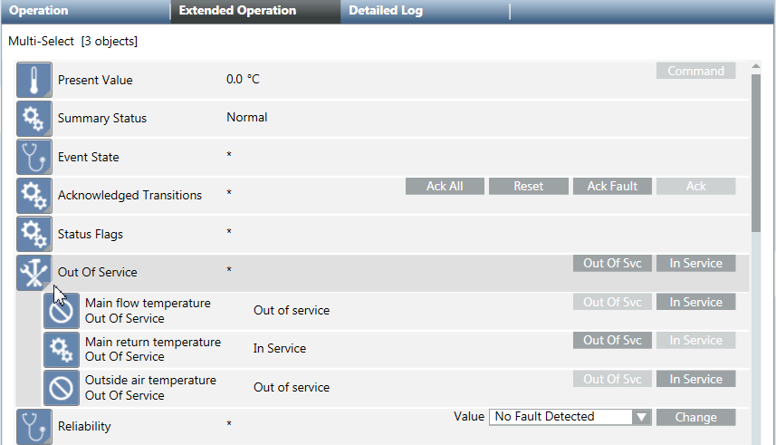

System Browser
This section provides step-by-step instructions for System Browser tasks. For background information, see the reference section.
Selecting Views
- From the Views list box, click the drop-down arrow.
- From the list of available views, select the view you want to display.
Searching for Objects
- In the Search list box, enter the name of the object you want to search for. You can use wildcarding when performing a search.
- Click the Search
 icon.
icon.
Filtering Searches
- Click the Filter icon
 .
. - In the Type field, click the drop-down arrow and select the object type and subtypes you want to filter by.
- In the Discipline field, click the drop-down arrow and select the discipline and subdisciplines you want to filter by.
- In the Other field, click the drop-down arrow and select the settings you want to filter by.
- In the Alias field, enter the case-sensitive alias you want to filter by.
- If you want to limit your search to the currently selected node in the tree, select the Search within selection check box.
- Click Search to begin the search.
- The search results display in the tree area.
Saving Searches
- You have performed a search using the appropriate filtering criteria as needed.
- Click Save Search
 .
. - In the Save Search field, type a name for your search.
- Click Save.
- The system saves the search filtering criteria but not the location in the tree at the time of the save.
Choosing a Display Mode
- Click the Display Mode drop-down list.
- Select the mode you want for displaying objects.
- The object displays in the new mode throughout the various panes in System Manager.
Making a Manually Selected Object the New Primary Selection
- The Manual Navigation box is checked, with one or more objects selected.
- Do one of the following:
- Right-click and select Send to the Primary Pane.
- Click the Send button.
- Double-click the object.
NOTE: Double-clicking works only when you select a single object.
Operating Multiple Objects
Multiple objects can be commanded or engineered using multi-select.
To select a number of non-adjacent objects:
- Select the first object using the mouse.
- Press the CTRL key and hold it.
- Select all other desired objects using the mouse.
To select a range of adjacent objects:
- Select the beginning of your range of objects using the mouse.
- Press the SHIFT key and hold it.
- Select the end of your range of objects using the mouse.
NOTE: For commanding, you can select a maximum of 250 items.
Commanding Multiple Objects in the Operation Tab
- The objects must be of the same type, such as analog input. If different object types are selected, the message
No properties (different properties)displays in the Operation tab.
- In System Browser, select Management View.
- Select the objects you want to change.
- In the Operation tab, select the properties that you want to command.
- If the properties have different values, they are displayed with an asterisk (*) but can be commanded.
- (Optional) Click the icon to display detailed information about the selected data points.

- Do one of the following:
- Change the value and click Send or Change.
- Click a command button to execute the respective function.
- Only object properties that have been changed will be logged in the Activity Log database.
Copying an Object Name, Description, Alias, or Designation
- You want to copy and paste an object name, description, alias, or designation.
- Right-click any object.
NOTE: Multi-selected objects are not supported. - From the Contextual menu, select Copy and then select the attribute you want to copy.
- Paste the selected attribute.